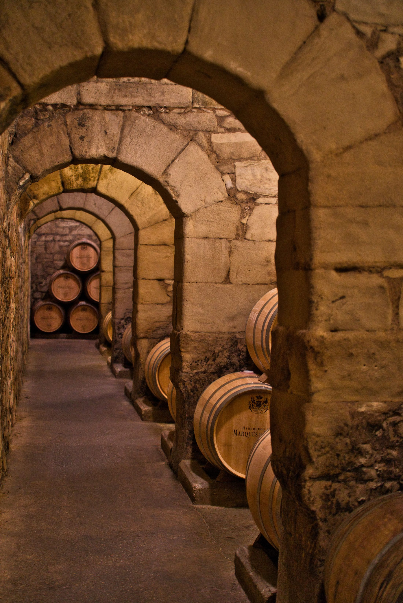
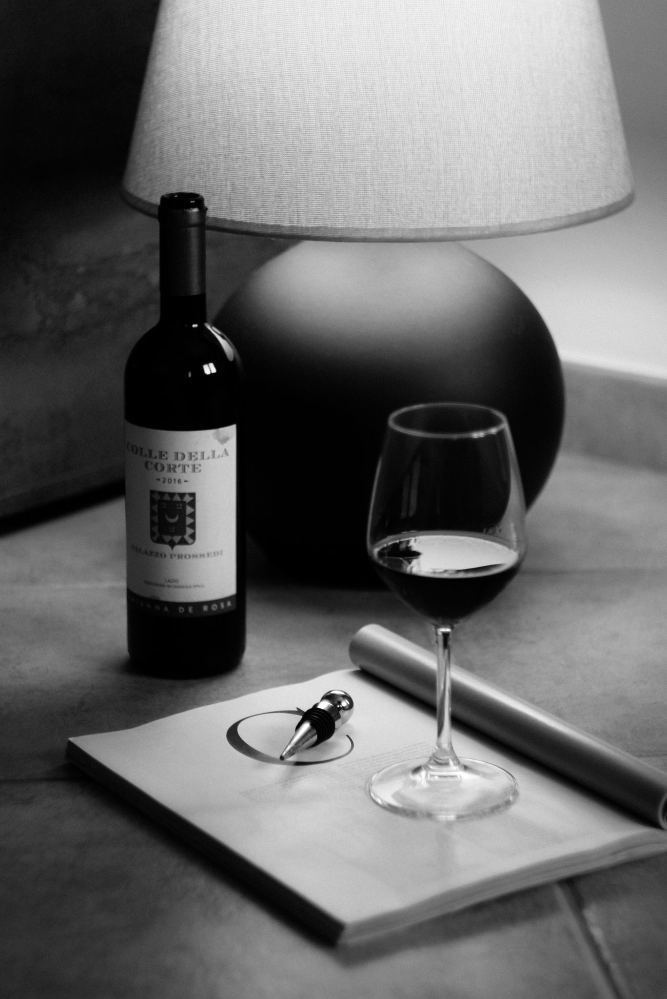

Veronica Bonelli
Wine Ambassador — Grand Hotel Timeo, A Belmond HotelWine Ambassador — Grand Hotel Timeo, A Belmond Hotel
Veronica Bonelli works at the intersection of wine, hospitality and place. Veronica Bonelli lavora all'incontro tra vino, ospitalità e territorio.
Based at Grand Hotel Timeo in Taormina, she is part of an environment where fine wine and gastronomy meet the history, landscape and culture of Sicily — a setting between the Ionian Sea, the Ancient Theatre and the presence of Mount Etna. Con base al Grand Hotel Timeo di Taormina, fa parte di un ambiente in cui il grande vino e la gastronomia incontrano la storia, il paesaggio e la cultura della Sicilia — un contesto tra il Mar Ionio, il Teatro Antico e la presenza dell'Etna.
Her approach is built on a simple conviction: wine should never stand alone. It carries a story, invites a dialogue, and — at its best — leaves something behind. Il suo approccio si fonda su una convinzione semplice: il vino non dovrebbe mai essere isolato. Racconta una storia, apre un dialogo e, nella sua forma migliore, lascia un segno.
Understanding a wine before recommending it — its origin, its maker, the moment it belongs to. Comprendere un vino prima di consigliarlo — la sua origine, chi lo produce, il momento a cui appartiene.
Reading the person at the table — knowing when knowledge should lead, and when it should simply make room for the moment. Leggere la persona seduta al tavolo — sapere quando la conoscenza deve guidare e quando deve semplicemente lasciare spazio al momento.
Letting Sicily — its volcano, its coastline, its history — shape the way wine is chosen and shared. Lasciare che la Sicilia — il suo vulcano, la sua costa, la sua storia — orienti il modo in cui il vino viene scelto e condiviso.

A singular setting.Un contesto unico.
Taormina offers a rare backdrop for this philosophy. Between the sea, the ancient theatre and the volcano, wine becomes part of a much larger conversation about landscape, culture and hospitality. Taormina offre uno sfondo raro per questa filosofia. Tra il mare, il teatro antico e il vulcano, il vino diventa parte di una conversazione molto più ampia su paesaggio, cultura e ospitalità.
It is this sense of place that continues to shape her approach to wine. È questo senso del luogo a continuare a orientare il suo approccio al vino.